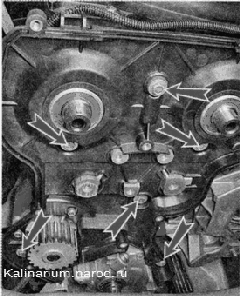
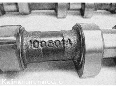

Распределительные валы - снятие и установкаСнятие 1. Снимаем шкивы распределительных валов. 2. Снимаем натяжной и направляющий ролики 3. Торцовым ключом на 10 мм отворачиваем шесть болтов крепления задней крышки ремня привода ГРМ. 4. Снимаем крышку. 5. Снимаем крышку головки блока цилиндров (. 6. Чтобы не повредить, снимаем датчик давления масла, либо отсоединяем от него наконечник провода. 7. Торцовым ключом на 8 мм равномерно, по пол-оборота, отворачиваем 20 болтов крепления корпуса подшипников распределительных валов. 8. Снимаем корпус подшипников распределительных валов. 9. Снимаем распределительный вал выпускных клапанов 1 и распределительный вал выпускных клапанов 2.
10. Вынимаем из посадочных отверстий в головке блока две заглушки технологических отверстий (около задних торцов распределительных валов).
11. Снимаем с валов шпонки и сальники. 12. Осматриваем валы. На шейках и кулачках вала не должны наблюдаться следы сильного износа, царапины, трещины, следы наволакивания металла. Установка 1. Смазываем чистым моторным маслом опорные шейки и кулачки валов. 2. Укладываем распределительные валы в головку блока цилиндров. Валы не взаимозаменяемы и имеют маркировку. Бал выпускных клапанов имеет маркировку 1006014. 
Вал впускных клапанов с маркировкой 1006015. Кроме того, вал впускных клапанов имеет дополнительный поясок. Внимание! 3. Наносим на нижнюю поверхность корпуса подшипников вокруг отверстий свечных колодцев тонкий слой герметика Локтайт 574, а также... ...и на плоскость головки блока цилиндров по следующей схеме: 4. Устанавливаем в головку блока цилиндров распределительные валы шпоночными пазами вверх. 5. Устанавливаем корпус подшипников на головку блока цилиндров и равномерно затягиваем болты его крепления до соприкосновения корпуса подшипников с головкой блока. Окончательно затягиваем болты крепления корпуса подшипников попарно, моментом 8,0-10,0 Нм (0,8-1,0 кгс-м) в последовательности указанной на фото (см. ниже). 6. Ветошью удаляем излишки герметика, выдавленные из зазора между головкой блока цилиндров и крышкой корпуса подшипников. 7. Запрессовываем сальники распределительных валов. 8. Запрессовываем две заглушки в головку блока цилиндров. 9. Дальнейшую сборку выполняем в последовательности обратной разборке. Последовательность затягивания болтов крепления корпусов подшипников |